PCA by hand
The dataset has five points: $(-2,-1),\ (-1,0),\ (0,1),\ (1,2),\ (2,3)$.
1. The first principal component
Centre the data. The mean is
Subtracting it gives the centred points $\tilde{\mathbf x}_n = (-2,-2),\ (-1,-1),\ (0,0),\ (1,1),\ (2,2)$.
Covariance. With $\tilde X$ the $5\times2$ matrix of centred points,
Eigenvectors. $\det(S - \lambda I) = (2.5-\lambda)^2 - 2.5^2 = \lambda(\lambda - 5) = 0$, so $\lambda_1 = 5$ and $\lambda_2 = 0$. For $\lambda_1 = 5$: $\begin{bmatrix} -2.5 & 2.5 \\ 2.5 & -2.5\end{bmatrix}\mathbf w = 0 \Rightarrow w_1 = w_2$, and normalizing to $\|\mathbf w\| = 1$:
(Its negative is equally valid; the sign of a PC is arbitrary.) This agrees with the
"minimum orthogonal distance" view: every centred point lies exactly on the line
$\tilde x_2 = \tilde x_1$, so the line through $\boldsymbol\mu$ along $\mathbf w_1$, i.e.
$x_2 = x_1 + 1$, has zero total orthogonal distance to the data, and no other direction does.
The first PC captures 100% of the variance ($\lambda_2 = 0$). Check: $S\mathbf w_1 = \tfrac{1}{\sqrt2}(5,\ 5) = 5\,\mathbf w_1$. Using $1/N$ instead of
$1/(N-1)$ scales the eigenvalues to 4 and 0 but gives the same eigenvector, and
pca.py confirms it numerically.
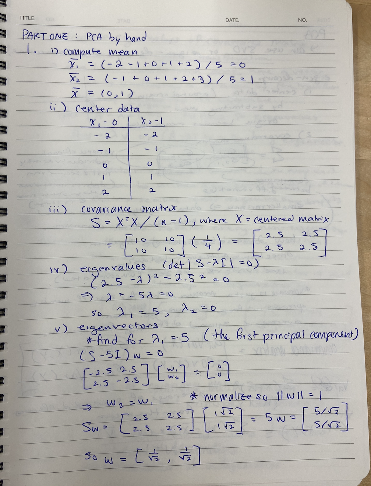
2. Reconstruction error of (3, 3)
Project the centred point onto $\mathbf w_1$, map the 1-D code back, and add the mean:
The reconstruction error of $(3,3)$ is $\boxed{1/\sqrt2 \approx 0.707}$ (squared error $0.5$). The point lies off the line $x_2 = x_1 + 1$, and the error is exactly its perpendicular distance to that line: $|x_2 - x_1 - 1|/\sqrt2 = |3 - 3 - 1|/\sqrt2$. The residual $(0.5,-0.5)$ is a multiple of the second PC $\tfrac1{\sqrt2}(1,-1)$, the part of the point the one-dimensional code throws away.
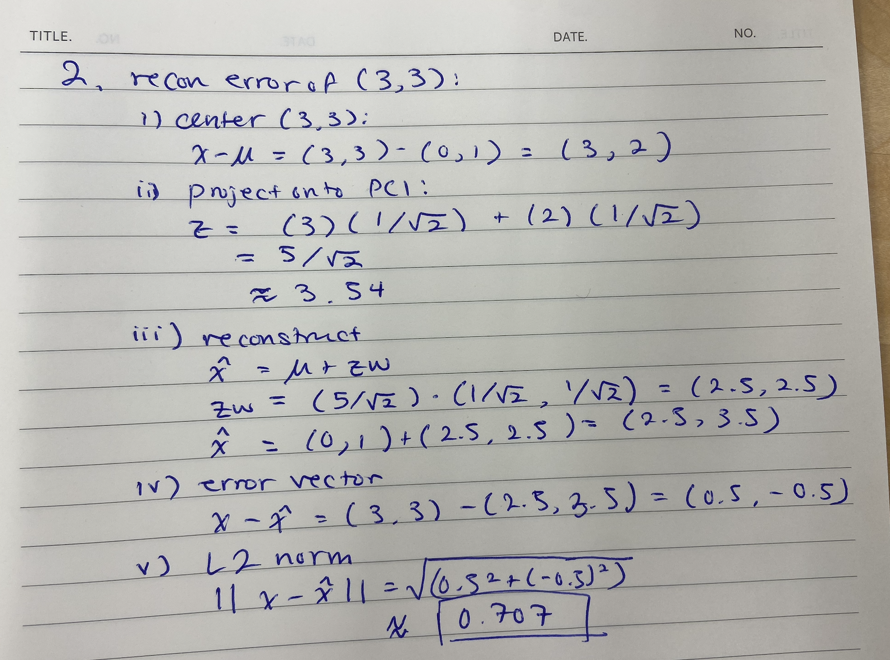
3. Reconstruction error of (3, 4)
The reconstruction error of $(3,4)$ is $\boxed{0}$. The point satisfies $x_2 = x_1 + 1$, so it lies on the principal line (beyond the range of the training points) and has no component along the second PC. One number, $z = 3\sqrt2$, describes it exactly.
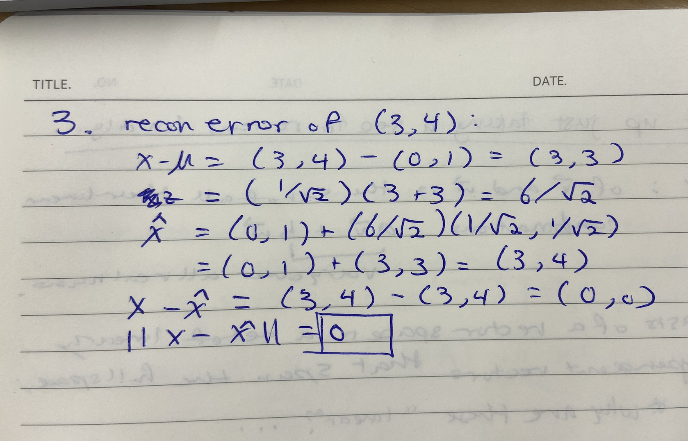
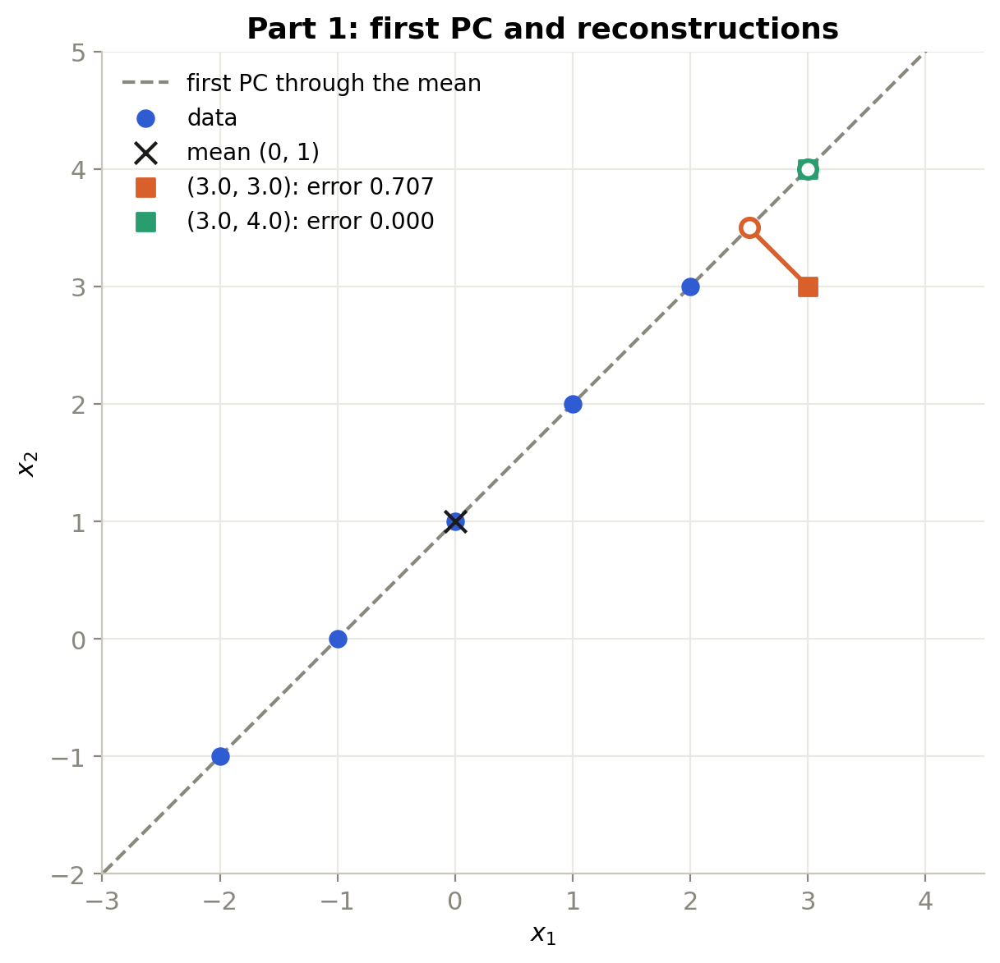
Visualizing and compressing the Iris data
The data
Iris has 150 flowers, 50 from each of three species (setosa, versicolor, virginica), with four
features measured in cm: sepal length, sepal width, petal length and petal width. I load the
UCI file (iris.data from archive.ics.uci.edu/dataset/53/iris) exactly as
distributed. Because every feature has the same unit (cm), PCA is done on the
centred but unscaled data, so a feature's variance counts in proportion to its
physical spread.
Part 2: Marginal views of the features
Marginalizing keeps a subset of the features and ignores the others, which is the same as projecting the points onto the coordinate axes of that subset. I show all four single features, all six pairs and two triples.
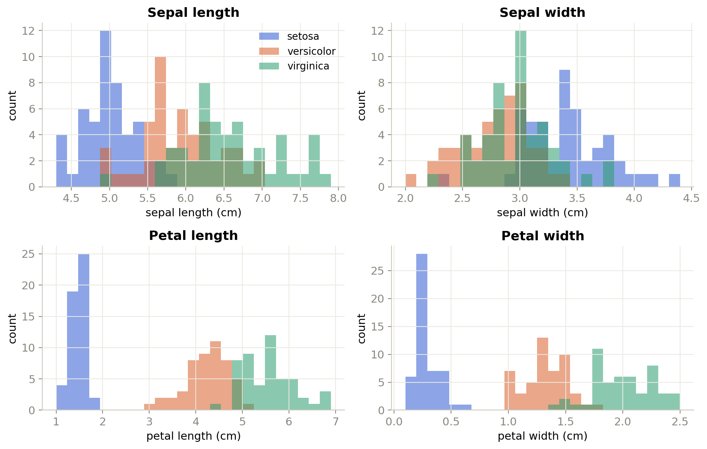
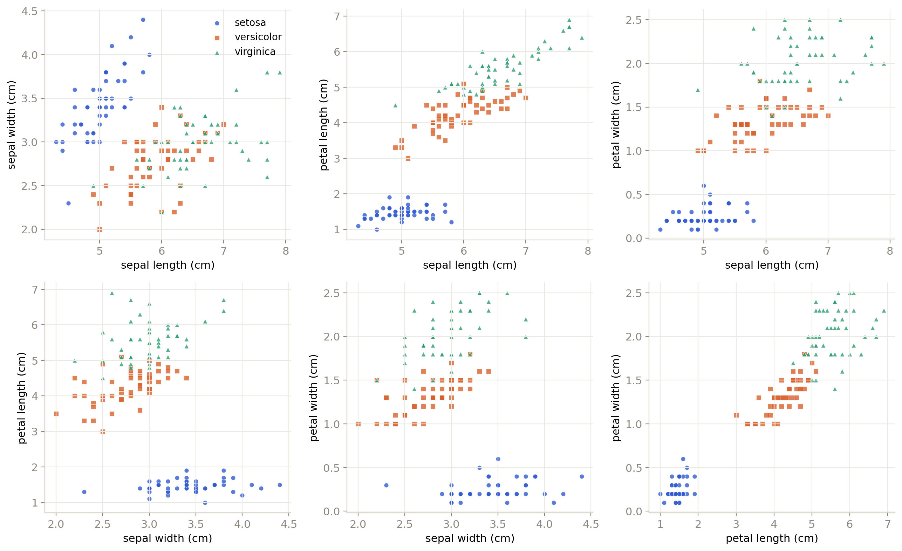
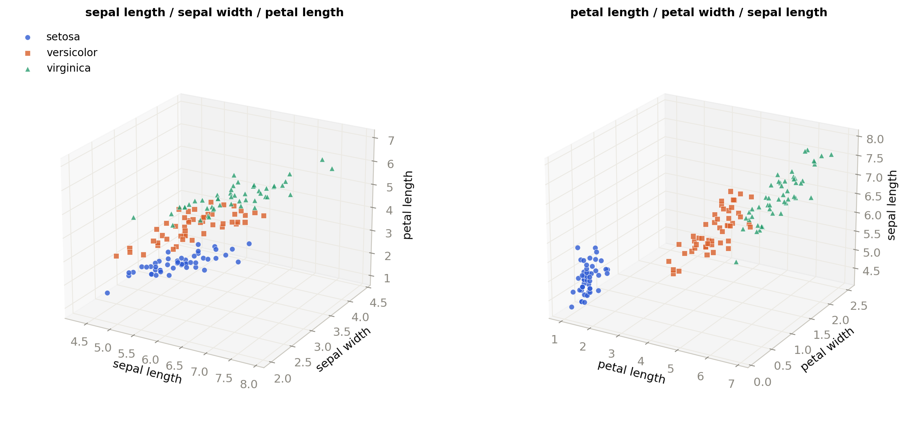
To put a number on "nice clusters" I also scored each marginal with a 5-nearest-neighbour classifier (10-fold stratified cross-validation, accuracy %):
| Features kept | 5-NN accuracy | Features kept | 5-NN accuracy |
|---|---|---|---|
| sepal length | 69.3 | sepal length + sepal width | 76.7 |
| sepal width | 52.0 | sepal length + petal length | 94.0 |
| petal length | 92.7 | sepal length + petal width | 96.0 |
| petal width | 96.0 | sepal width + petal length | 94.7 |
| all four | 95.3 | sepal width + petal width | 94.7 |
| petal length + petal width | 96.0 |
The petal features give clear clusters; the sepal features do not. In one dimension, petal length and petal width each separate setosa completely: setosa petals are 1.0–1.9 cm long and 0.1–0.6 cm wide, while every other flower has petals at least 3.0 cm long and 1.0 cm wide, so a single threshold isolates setosa with no errors. Versicolor and virginica follow in that order but overlap (petal length 3.0–5.1 vs 4.5–6.9 cm). Sepal length and especially sepal width overlap heavily across all three species (sepal width alone classifies only 52% correctly, barely above the 33% of guessing).
The best pair is petal length vs petal width (Figure 3, bottom right): three compact groups along a diagonal, setosa far from the others and versicolor/virginica touching at only a few flowers near petal length 5 cm, petal width 1.6–1.8 cm. Any pair that includes a petal feature separates setosa. Sepal length vs sepal width is the only pair without clean clusters: setosa (short, wide sepals) still stands apart, but versicolor and virginica are mixed together.
The third dimension adds little. The petal-based triple (Figure 4, right) shows the same three groups as the petal pair, and the sepal-heavy triple (left) only separates well because it includes petal length. Petal width alone already reaches 96% with 5-NN, which matches or beats using all four features (95.3%), so for classification a single well-chosen feature is almost enough. In Part 3, PC1 happens to align with the petal features, but PCA picks the direction of largest variance, not the one that best separates the classes, and this is not guaranteed in general: PC1 alone scores 91.3% with 5-NN (Part 5), below petal width alone.
Part 3: PCA
sklearn.decomposition.PCA centres the data on the mean
$\boldsymbol\mu = (5.843,\ 3.054,\ 3.759,\ 1.199)$ cm and returns the unit eigenvectors of the
covariance matrix, sorted by eigenvalue. The PCA axes, as unit vectors in the order
(sepal length, sepal width, petal length, petal width), are:
| Axis | sepal length | sepal width | petal length | petal width | Variance (cm²) | % of total |
|---|---|---|---|---|---|---|
| PC1 | 0.3616 | −0.0823 | 0.8566 | 0.3588 | 4.2248 | 92.46 |
| PC2 | 0.6565 | 0.7297 | −0.1758 | −0.0747 | 0.2422 | 5.30 |
| PC3 | −0.5810 | 0.5964 | 0.0725 | 0.5491 | 0.0785 | 1.72 |
| PC4 | 0.3173 | −0.3241 | −0.4797 | 0.7511 | 0.0237 | 0.52 |
The PC scores of a flower are $z_k = \mathbf w_k^\top(\mathbf x - \boldsymbol\mu)$. (Signs are arbitrary; flipping a PC mirrors its plot.)
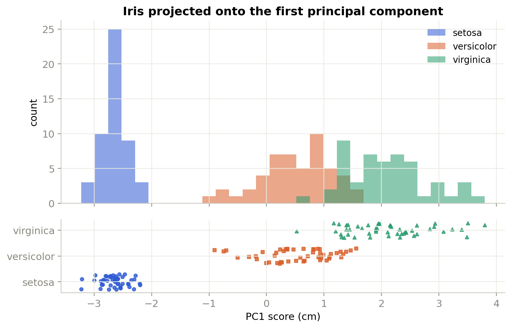
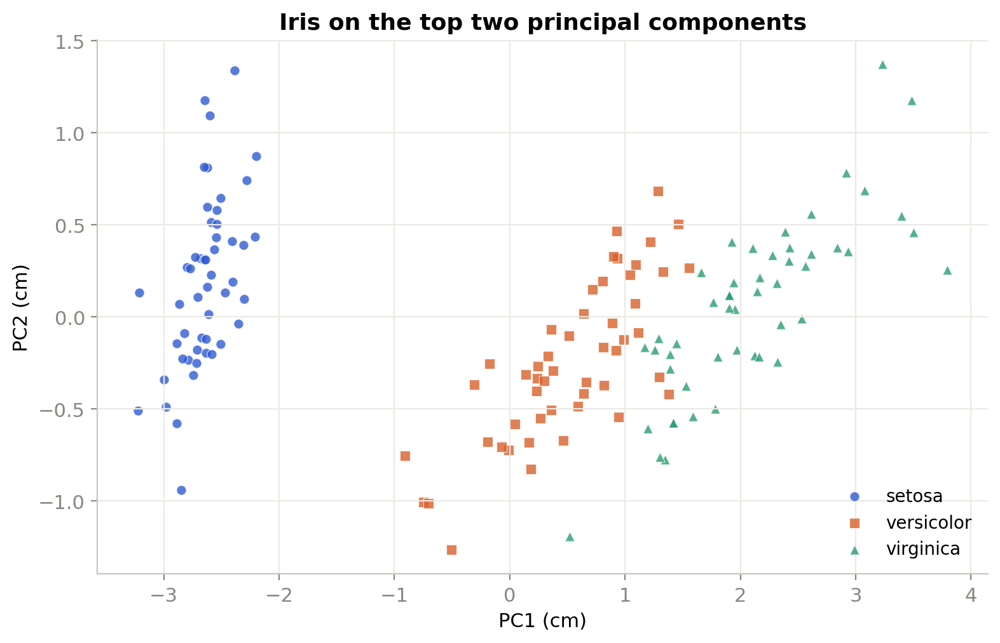
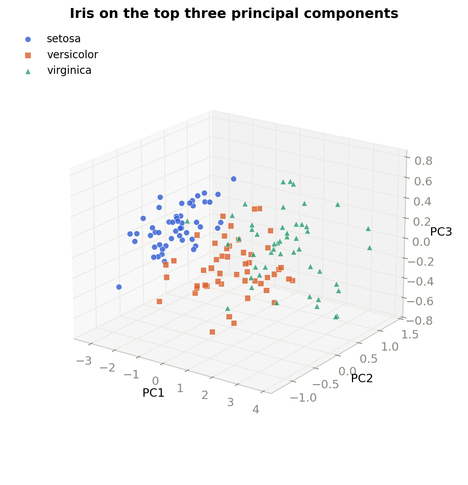
PC1 is mostly petal length (weight 0.857), plus sepal length and petal width with equal smaller weights: it is an overall "flower size, dominated by the petals" direction. Petal length has by far the largest variance (3.1 cm² of the total 4.57 cm²), which is why unscaled PCA follows it. On PC1 alone (Figure 5) setosa is a separate block (scores below about −2) and versicolor and virginica sit side by side with a small overlap, much like the petal-length marginal of Part 2.
PC2 is sepal size (sepal length 0.657, sepal width 0.730). Adding it (Figure 6) spreads each species vertically but does not improve the separation much: the gap between setosa and the rest, and the versicolor/virginica boundary, are both along PC1. PC3 and PC4 carry only 2.2% of the variance together, and the 3-D view (Figure 7) looks like the 2-D one with a thin amount of extra depth.
Part 4: Data compression
Let $X_c$ be the $150\times4$ centred data matrix with singular values $\sigma_1 \ge \dots \ge \sigma_4$. The squared Frobenius norm is the total sum of squares, which links it to the total variance:
Here $S$ uses $1/(N-1)$, as scikit-learn does. With the lecture's $1/N$ convention $\|X_c\|_F^2 = N\operatorname{tr}(S)$ instead; the variance fractions below are identical either way.
Projecting onto the top $k$ PCs, $W_k = [\mathbf w_1 \cdots \mathbf w_k]$, keeps $\|X_c W_k\|_F^2 = \sum_{i\le k}\sigma_i^2$, and the reconstruction loses exactly the rest, $\|X_c - X_cW_kW_k^\top\|_F^2 = \sum_{i>k}\sigma_i^2$ (the analysis view: maximizing the variance kept is the same as minimizing the reconstruction error). So the fraction of variance explained by $k$ PCs is
This is the lecture's rule of thumb $r_k = \sum_{i\le k}\lambda_i^2 / \sum_i \lambda_i^2$ ("PCA revisited – by SVD"), where the $\lambda_i$ on that slide are the singular values $\sigma_i$ of $X_c$, not the covariance eigenvalues (the eigenvalues are $\sigma_i^2/N$). Squaring the covariance eigenvalues instead would give a wrong 99.63% for one PC and 99.96% for two.
For Iris $\|X_c\|_F^2 = 680.82$ (total variance $680.82/149 = 4.569$ cm²) and the squared singular values are $629.50,\ 36.09,\ 11.70,\ 3.53$:
| PCs kept $k$ | $\|X_cW_k\|_F^2$ | Residual $\|X_c - X_cW_kW_k^\top\|_F^2$ | Variance explained |
|---|---|---|---|
| 1 | 629.50 | 51.32 | 92.46% |
| 2 | 665.60 | 15.23 | 97.76% |
| 3 | 677.30 | 3.53 | 99.48% |
| 4 | 680.82 | 0 | 100% |
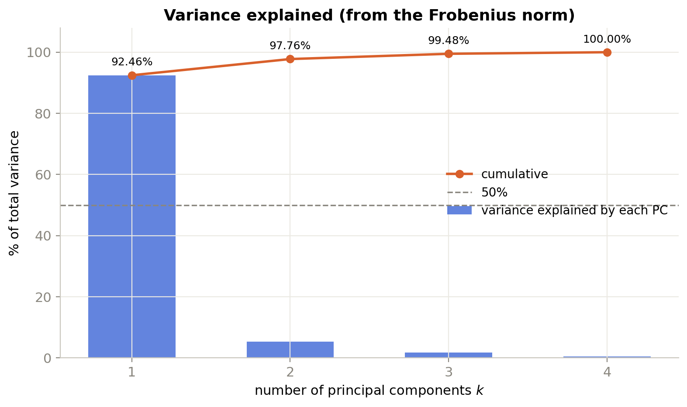
1. The two-dimensional representation from Part 3 explains $665.60 / 680.82 = \mathbf{97.76\%}$ of the variance (92.46% from PC1 plus 5.30% from PC2). Halving the storage from four numbers per flower to two loses only 2.2% of the variance; the RMS reconstruction error is $\sqrt{15.23/150} = 0.32$ cm per flower.
2. One PC is enough to explain 50% of the variance: PC1 alone already explains 92.46%, far above the 50% threshold (zero PCs explain 0%).
This depends on not rescaling the features. If each feature is first standardized to unit variance, the shares become 72.77%, 23.03%, 3.68% and 0.52%, so two PCs explain 95.80% and one PC (72.77%) is still enough for 50%. The answers are the same, but PC1 is less dominant because the small-variance sepal width is given equal weight.
ISOMAP
Method
sklearn.manifold.Isomap(n_neighbors=3, n_components=2) does three steps:
- Build a graph joining each flower to its 3 nearest neighbours, with Euclidean edge lengths.
- Approximate the geodesic distance between every pair as the shortest path through the graph (Dijkstra).
- Embed the points in 2-D so that Euclidean distances match those geodesic distances (MDS).
Two details matter for Iris. First, with only 3 neighbours the graph is not connected:
it splits into setosa and the other 100 flowers, so some geodesic distances are infinite.
scikit-learn 1.0 then joins the two components through their closest pair of points (and
warns), so the setosa-to-rest distances run through a single artificial bridge edge.
Second, scikit-learn's Isomap solves step 3 with classical MDS, an eigendecomposition of
the double-centred squared geodesic distances, not with gradient descent. To also cover the
iterative version described in the assignment, I fed the same geodesic distance matrix to
sklearn.manifold.MDS(dissimilarity="precomputed"), which minimizes the stress
$\sum_{i<j}(d_{ij} - \|\mathbf z_i - \mathbf z_j\|)^2$ iteratively with SMACOF
(majorization, a monotone form of gradient descent), taking the best of 4 random starts.
The embedding with 3 nearest neighbours
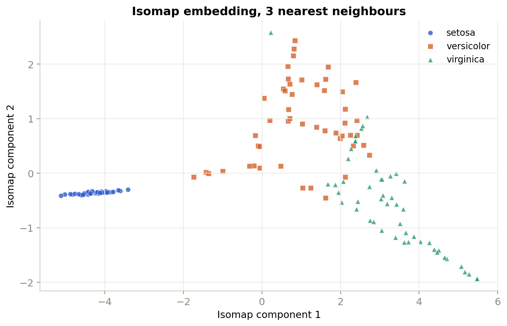
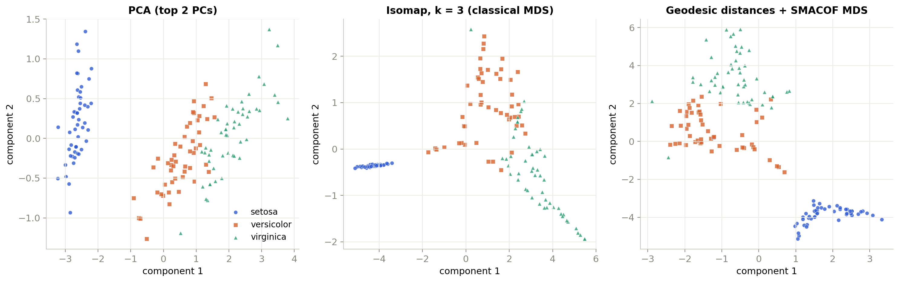
ISOMAP squeezes setosa into a thin line far to the left: all setosa flowers are close to each other along the graph but a long path away from everything else. Versicolor and virginica are unrolled into two arms of a "V" that meet where their graph neighbourhoods overlap. The iterative SMACOF fit of the same distances gives a different picture (it is free to bend the arms and it is not constrained to the top eigenvectors), but the same story: setosa far apart, the other two species next to each other with a mixed boundary.
ISOMAP vs PCA
I compared the two methods for embedding dimensions $d = 1$ to 4 on two criteria. Compression uses ISOMAP's own quality measure, the residual variance $1 - R^2$ between a set of target distances and the Euclidean distances in the embedding (0 means the distances are reproduced perfectly up to scale). Classification is the 10-fold cross-validated accuracy of a 5-NN classifier trained on the embedding.
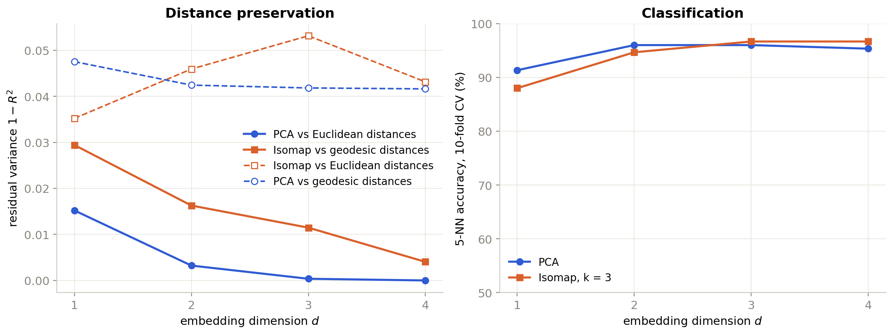
| $d$ | PCA residual variance | ISOMAP residual variance | 5-NN accuracy (%) | |||
|---|---|---|---|---|---|---|
| vs Euclidean | vs geodesic | vs Euclidean | vs geodesic | PCA | ISOMAP | |
| 1 | 0.0152 | 0.0475 | 0.0352 | 0.0294 | 91.3 | 88.0 |
| 2 | 0.0032 | 0.0424 | 0.0459 | 0.0163 | 96.0 | 94.7 |
| 3 | 0.0004 | 0.0418 | 0.0531 | 0.0115 | 96.0 | 96.7 |
| 4 | 0.0000 | 0.0416 | 0.0431 | 0.0040 | 95.3 | 96.7 |
For reference, 5-NN on all four raw features scores 95.3%, and on the 2-D SMACOF embedding 95.3%.
For Iris, PCA is preferable.
Compression. Each method preserves the distances it is built for: ISOMAP reproduces the geodesic distances better (residual variance 0.016 in 2-D vs 0.042 for PCA), and PCA reproduces the original Euclidean distances almost exactly (0.003 vs 0.046). The question is which distances are worth keeping. Iris is close to linear: one direction holds 92.5% of the variance and two hold 97.8%, so the cloud is nearly flat and there is little evidence of a curved manifold for ISOMAP to unroll. PCA also is a compression scheme in the full sense: two numbers per flower plus a fixed $4\times2$ matrix and the mean reconstruct each flower to within 0.32 cm RMS, and new flowers can be encoded with one matrix product. ISOMAP has no decoder (an embedding cannot be mapped back to measurements), and encoding a new flower requires the training graph.
Classification. In 2-D, PCA scores 96.0% and ISOMAP 94.7%. In 3-D and 4-D ISOMAP is slightly ahead (96.7% vs 96.0% and 95.3%). Every one of these differences is one or two flowers out of 150, well within the noise of cross-validation on this dataset. Both methods separate setosa perfectly and both confuse a few versicolor/virginica flowers, because those two species genuinely overlap in the measurements (Part 2). ISOMAP gives no real classification advantage.
Robustness. With $k = 3$ the neighbour graph is disconnected, so the distance between setosa and the other species comes from a single bridge edge chosen by the software, and the layout depends on how a handful of shortest paths happen to run. Changing $k$, or the MDS solver (Figure 10, centre vs right), changes the picture noticeably. PCA's only choice is the number of components $k$, and its solution is unique (up to sign) because the covariance eigenvalues are distinct.
The motivation for ISOMAP (that Euclidean distances between very different plants are not meaningful) is sound for data that lie on a curved manifold, and ISOMAP does emphasize that setosa is far from the other species. But Iris has only four features, nearly linear structure and well-separated clusters, so the simpler linear method gives an equally good visualization, equal classification accuracy, and an actual, invertible compression.
Python implementation
pca.py computes everything: part1_by_hand (Part 1, with NumPy only),
the marginal plots and 5-NN scores (Part 2), part3_pca (Part 3),
part4_compression (Part 4, the Frobenius-norm calculation),
part5_isomap, geodesic_smacof and compare_embeddings
(Part 5). plots.py only draws. Run python pca.py from
A3/code/ to print every number on this page and save the plots to
A3/media/. Tested with Python 3.9, NumPy 1.24, scikit-learn 1.0.2 and
Matplotlib 3.9. The data file iris.data is the unmodified UCI Iris file.
pca.py: analysis & driver Python
"""
SYDE 572 Assignment 3: PCA, data visualization and ISOMAP.
Part 1 PCA by hand : part1_by_hand
Part 2 data visualization : marginal plots of 1, 2 and 3 Iris features
Part 3 PCA on Iris : part3_pca
Part 4 data compression : part4_compression (Frobenius-norm view of explained variance)
Part 5 non-linear components : part5_isomap (3 nearest neighbours) and compare_embeddings
python pca.py (prints the numbers and saves the plots to ../media/)
"""
import os
import warnings
import numpy as np
from scipy.spatial.distance import pdist, squareform
from sklearn.decomposition import PCA
from sklearn.manifold import MDS, Isomap
from sklearn.model_selection import StratifiedKFold, cross_val_score
from sklearn.neighbors import KNeighborsClassifier
import plots
HERE = os.path.dirname(os.path.abspath(__file__))
MEDIA = os.path.join(HERE, "..", "media")
SEED = 0
# ---------- Part 1: PCA by hand ----------
def part1_by_hand():
"""Centre the 5 points, eigendecompose the covariance, and reconstruct (3,3) and (3,4) from the first PC."""
D = np.array([[-2, -1], [-1, 0], [0, 1], [1, 2], [2, 3]], float)
mu = D.mean(axis=0)
Dc = D - mu
S = Dc.T @ Dc / (len(D) - 1) # covariance (1/(N-1), as in the hand work; 1/N gives the same eigenvectors)
evals, evecs = np.linalg.eigh(S)
w = evecs[:, np.argmax(evals)]
w = w * np.sign(w[0]) # sign is arbitrary: pick the one pointing into the first quadrant
out = {"data": D, "mean": mu, "cov": S, "evals": np.sort(evals)[::-1], "w": w, "points": {}}
for p in ([3, 3], [3, 4]):
p = np.array(p, float)
z = w @ (p - mu) # 1-D code
rec = mu + z * w # reconstruction
out["points"][tuple(p)] = (z, rec, np.linalg.norm(p - rec))
return out
# ---------- Iris ----------
def load_data():
"""The Iris data (150 x 4, in cm) from the UCI file iris.data (archive.ics.uci.edu/dataset/53/iris), used as is."""
classes = ["setosa", "versicolor", "virginica"]
rows = [line.strip().split(",") for line in open(os.path.join(HERE, "iris.data")) if line.strip()]
X = np.array([[float(v) for v in r[:4]] for r in rows])
y = np.array([classes.index(r[4].replace("Iris-", "")) for r in rows])
names = ["sepal length", "sepal width", "petal length", "petal width"]
return X, y, names, classes
# ---------- Part 3: PCA ----------
def part3_pca(X):
"""PCA on the centred (unscaled) data: all four features are in cm, so no standardization is needed."""
pca = PCA(n_components=4).fit(X)
return pca, pca.transform(X)
# ---------- Part 4: compression ----------
def part4_compression(X, pca):
"""Explained variance from the Frobenius norm: ||X_c||_F^2 = sum of squared singular values = (N-1) * total variance,
and ||X_c - X_c W_k W_k^T||_F^2 is the variance the first k PCs leave out."""
Xc = X - X.mean(axis=0)
total = np.linalg.norm(Xc, "fro") ** 2
rows = []
for k in range(1, X.shape[1] + 1):
W = pca.components_[:k].T
kept = np.linalg.norm(Xc @ W, "fro") ** 2
resid = np.linalg.norm(Xc - Xc @ W @ W.T, "fro") ** 2
rows.append((k, kept, resid, kept / total))
k50 = next(k for k, _, _, f in rows if f >= 0.5)
return total, rows, k50
# ---------- Part 5: ISOMAP ----------
def part5_isomap(X, k=3, dims=2):
"""sklearn Isomap: k-NN graph -> shortest-path (geodesic) distances -> classical MDS (eigendecomposition).
With k = 3 the graph has two components (setosa / the rest); sklearn 1.0 joins them by their closest pair of points."""
with warnings.catch_warnings():
warnings.simplefilter("ignore")
iso = Isomap(n_neighbors=k, n_components=dims)
Z = iso.fit_transform(X)
return iso, Z
def geodesic_smacof(G, dims=2):
"""Metric MDS fitted iteratively (SMACOF, a majorization form of gradient descent on the stress) to the geodesic distances."""
mds = MDS(n_components=dims, dissimilarity="precomputed", n_init=4, max_iter=1000, random_state=SEED)
return mds.fit_transform(G), mds.stress_
def residual_variance(D_target, Z):
"""Isomap's quality measure: 1 - R^2 between the target distances and the Euclidean distances in the embedding."""
r = np.corrcoef(squareform(D_target, checks=False), pdist(Z))[0, 1]
return 1 - r ** 2
def knn_accuracy(Z, y, k=5):
"""10-fold stratified CV accuracy of a 5-NN classifier on an embedding (fixed shuffle)."""
cv = StratifiedKFold(n_splits=10, shuffle=True, random_state=SEED)
return cross_val_score(KNeighborsClassifier(n_neighbors=k), Z, y, cv=cv).mean()
def compare_embeddings(X, y, G):
"""For d = 1..4: residual variance against Euclidean and geodesic distances, and 5-NN accuracy, for PCA and Isomap."""
D_euc = squareform(pdist(X))
rows = []
for d in range(1, 5):
Zp = PCA(n_components=d).fit_transform(X)
_, Zi = part5_isomap(X, dims=d)
rows.append((d,
residual_variance(D_euc, Zp), residual_variance(G, Zp),
residual_variance(D_euc, Zi), residual_variance(G, Zi),
knn_accuracy(Zp, y), knn_accuracy(Zi, y)))
return rows
# ---------- driver ----------
if __name__ == "__main__":
warnings.filterwarnings("ignore", category=FutureWarning) # scipy.stats.mode notice inside sklearn 1.0 k-NN
os.makedirs(MEDIA, exist_ok=True)
plots.setup_style()
np.set_printoptions(precision=4, suppress=True)
# Part 1
p1 = part1_by_hand()
print("Part 1")
print(f" mean = {p1['mean']}, covariance =\n{p1['cov']}")
print(f" eigenvalues = {p1['evals']}, first PC w = {p1['w']}")
for p, (z, rec, err) in p1["points"].items():
print(f" {p}: z = {z:.4f}, reconstruction = {rec}, L2 error = {err:.4f}")
plots.plot_part1(p1, os.path.join(MEDIA, "p1_by_hand.png"))
# Part 2
X, y, names, classes = load_data()
print(f"\nIris {X.shape}, classes {classes}")
for j, n in enumerate(names):
rng = [f"{c}: {X[y == i, j].min():.1f}-{X[y == i, j].max():.1f}" for i, c in enumerate(classes)]
print(f" {n:13s} " + ", ".join(rng))
plots.plot_1d(X, y, names, classes, os.path.join(MEDIA, "p2_1d.png"))
plots.plot_2d(X, y, names, classes, os.path.join(MEDIA, "p2_2d.png"))
plots.plot_3d(X, y, names, classes, [(0, 1, 2), (2, 3, 0)], os.path.join(MEDIA, "p2_3d.png"))
print(" 5-NN accuracy on single features / pairs:")
for j, n in enumerate(names):
print(f" {n:13s} {knn_accuracy(X[:, [j]], y):.3f}")
for a in range(4):
for b in range(a + 1, 4):
print(f" {names[a]} + {names[b]}: {knn_accuracy(X[:, [a, b]], y):.3f}")
# Part 3
pca, Z = part3_pca(X)
print("\nPart 3: PCA axes (rows), feature order", names)
print(f" mean = {pca.mean_}")
for i, c in enumerate(pca.components_):
print(f" PC{i + 1} = {c}, variance {pca.explained_variance_[i]:.4f}")
plots.plot_pc1(Z, y, classes, os.path.join(MEDIA, "p3_pc1.png"))
plots.plot_pc12(Z, y, classes, os.path.join(MEDIA, "p3_pc12.png"))
plots.plot_pc123(Z, y, classes, os.path.join(MEDIA, "p3_pc123.png"))
# Part 4
total, rows, k50 = part4_compression(X, pca)
print(f"\nPart 4: ||X_c||_F^2 = {total:.4f} (total variance {total / (len(X) - 1):.4f})")
print(" k ||X_c W_k||_F^2 residual explained")
for k, kept, resid, f in rows:
print(f" {k} {kept:13.4f} {resid:8.4f} {100 * f:7.2f}%")
print(f" PCs needed for 50%: {k50}")
print(f" (standardized features instead: {np.round(100 * np.cumsum(PCA().fit((X - X.mean(0)) / X.std(0)).explained_variance_ratio_), 2)} %)")
plots.plot_scree([f for *_, f in rows], os.path.join(MEDIA, "p4_scree.png"))
# Part 5
iso, Zi = part5_isomap(X)
G = iso.dist_matrix_
Zs, stress = geodesic_smacof(G)
print(f"\nPart 5: Isomap k = 3, geodesic distances finite: {np.isfinite(G).all()}")
print(f" SMACOF stress on geodesic distances = {stress:.1f}")
plots.plot_isomap(Zi, y, classes, os.path.join(MEDIA, "p5_isomap.png"))
plots.plot_compare([Z[:, :2], Zi, Zs], y, classes,
["PCA (top 2 PCs)", "Isomap, k = 3 (classical MDS)", "Geodesic distances + SMACOF MDS"],
os.path.join(MEDIA, "p5_compare.png"))
rows = compare_embeddings(X, y, G)
print(" d resvar PCA (euc, geo) resvar Isomap (euc, geo) 5-NN acc PCA Isomap")
for d, pe, pg, ie, ig, ap, ai in rows:
print(f" {d} {pe:.4f} {pg:.4f} {ie:.4f} {ig:.4f} {ap:.3f} {ai:.3f}")
print(f" 5-NN accuracy on all 4 raw features: {knn_accuracy(X, y):.3f}")
print(f" 5-NN accuracy, SMACOF 2-D: {knn_accuracy(Zs, y):.3f}")
plots.plot_residual(rows, os.path.join(MEDIA, "p5_residual.png"))
plots.py: plotting helpers Python
"""
Plotting helpers for SYDE 572 Assignment 3. These only draw: pca.py computes the numbers.
"""
import numpy as np
import matplotlib.pyplot as plt
from mpl_toolkits.mplot3d import Axes3D # noqa: F401 (registers the 3-D projection)
CLASS_COLORS = ["#2f5bd3", "#d9602b", "#2a9d6f"]
MARKERS = ["o", "s", "^"]
POINT = "#1c1b19"
MUTED = "#8a877f"
def setup_style():
plt.rcParams.update({
"figure.facecolor": "white",
"savefig.facecolor": "white",
"font.size": 11,
"axes.titlesize": 13,
"axes.titleweight": "semibold",
"axes.edgecolor": "#c9c6bd",
"axes.linewidth": 0.8,
"axes.spines.top": False,
"axes.spines.right": False,
"axes.grid": True,
"grid.color": "#ebe9e3",
"xtick.color": MUTED,
"ytick.color": MUTED,
"legend.frameon": False,
"legend.fontsize": 10,
})
def _save(fig, fname):
fig.tight_layout()
fig.savefig(fname, dpi=200, bbox_inches="tight")
plt.close(fig)
def _scatter(ax, Z, y, classes, **kw):
for i, c in enumerate(classes):
ax.scatter(*[Z[y == i, j] for j in range(Z.shape[1])], s=kw.get("s", 22), color=CLASS_COLORS[i],
marker=MARKERS[i], alpha=0.8, edgecolor="white", linewidth=0.4, label=c)
# ---------- Part 1 ----------
def plot_part1(p1, fname):
D, mu, w = p1["data"], p1["mean"], p1["w"]
fig, ax = plt.subplots(figsize=(6.4, 6))
t = np.linspace(-5, 6, 2)
ax.plot(mu[0] + t * w[0], mu[1] + t * w[1], color=MUTED, lw=1.5, ls="--", label="first PC through the mean")
ax.scatter(D[:, 0], D[:, 1], s=50, color=CLASS_COLORS[0], zorder=3, label="data")
ax.scatter(*mu, s=90, marker="x", color=POINT, zorder=4, label="mean (0, 1)")
for (p, (z, rec, err)), col in zip(p1["points"].items(), [CLASS_COLORS[1], CLASS_COLORS[2]]):
ax.scatter(*p, s=60, color=col, marker="s", zorder=4, label=f"{p}: error {err:.3f}")
ax.scatter(*rec, s=60, facecolor="white", edgecolor=col, lw=2, zorder=4)
ax.plot([p[0], rec[0]], [p[1], rec[1]], color=col, lw=2)
ax.set_xlim(-3, 4.5)
ax.set_ylim(-2, 5)
ax.set_aspect("equal")
ax.set_xlabel("$x_1$")
ax.set_ylabel("$x_2$")
ax.set_title("Part 1: first PC and reconstructions")
ax.legend(loc="upper left")
_save(fig, fname)
# ---------- Part 2 ----------
def plot_1d(X, y, names, classes, fname):
fig, axes = plt.subplots(2, 2, figsize=(10, 6.4))
for j, ax in enumerate(axes.ravel()):
bins = np.linspace(X[:, j].min(), X[:, j].max(), 26)
for i, c in enumerate(classes):
ax.hist(X[y == i, j], bins=bins, color=CLASS_COLORS[i], alpha=0.55, label=c)
ax.set_xlabel(f"{names[j]} (cm)")
ax.set_ylabel("count")
ax.set_title(names[j].capitalize())
axes[0, 0].legend()
_save(fig, fname)
def plot_2d(X, y, names, classes, fname):
pairs = [(a, b) for a in range(4) for b in range(a + 1, 4)]
fig, axes = plt.subplots(2, 3, figsize=(13, 8))
for (a, b), ax in zip(pairs, axes.ravel()):
_scatter(ax, X[:, [a, b]], y, classes)
ax.set_xlabel(f"{names[a]} (cm)")
ax.set_ylabel(f"{names[b]} (cm)")
axes[0, 0].legend()
_save(fig, fname)
def plot_3d(X, y, names, classes, triples, fname):
fig = plt.figure(figsize=(13, 6))
for k, t in enumerate(triples):
ax = fig.add_subplot(1, len(triples), k + 1, projection="3d")
_scatter(ax, X[:, list(t)], y, classes, s=26)
ax.set_xlabel(names[t[0]])
ax.set_ylabel(names[t[1]])
ax.set_zlabel(names[t[2]])
ax.view_init(elev=22, azim=-60)
ax.set_box_aspect(None, zoom=0.85) # keep the z label inside the figure
ax.set_title(" / ".join(names[i] for i in t), fontsize=11)
fig.axes[0].legend(loc="upper left")
_save(fig, fname)
# ---------- Part 3 ----------
def plot_pc1(Z, y, classes, fname):
fig, (ax, ax2) = plt.subplots(2, 1, figsize=(8, 5.2), sharex=True, gridspec_kw={"height_ratios": [3, 1.2]})
bins = np.linspace(Z[:, 0].min(), Z[:, 0].max(), 31)
jitter = np.random.default_rng(0).uniform(-0.3, 0.3, len(Z))
for i, c in enumerate(classes):
ax.hist(Z[y == i, 0], bins=bins, color=CLASS_COLORS[i], alpha=0.55, label=c)
ax2.scatter(Z[y == i, 0], i + jitter[y == i], s=14, color=CLASS_COLORS[i], marker=MARKERS[i], alpha=0.8)
ax.set_ylabel("count")
ax.set_title("Iris projected onto the first principal component")
ax.legend()
ax2.set_yticks(range(3))
ax2.set_yticklabels(classes)
ax2.set_xlabel("PC1 score (cm)")
_save(fig, fname)
def plot_pc12(Z, y, classes, fname):
fig, ax = plt.subplots(figsize=(8, 5.2))
_scatter(ax, Z[:, :2], y, classes, s=30)
ax.set_xlabel("PC1 (cm)")
ax.set_ylabel("PC2 (cm)")
ax.set_title("Iris on the top two principal components")
ax.legend()
_save(fig, fname)
def plot_pc123(Z, y, classes, fname):
fig = plt.figure(figsize=(8.5, 6.5))
ax = fig.add_subplot(projection="3d")
_scatter(ax, Z[:, :3], y, classes, s=30)
ax.set_xlabel("PC1")
ax.set_ylabel("PC2")
ax.set_zlabel("PC3")
ax.view_init(elev=20, azim=-55)
ax.set_box_aspect(None, zoom=0.82)
ax.set_title("Iris on the top three principal components")
ax.legend(loc="upper left")
_save(fig, fname)
# ---------- Part 4 ----------
def plot_scree(cum_frac, fname):
cum = 100 * np.array(cum_frac)
each = np.diff(np.concatenate([[0], cum]))
k = np.arange(1, len(cum) + 1)
fig, ax = plt.subplots(figsize=(8, 4.8))
ax.bar(k, each, color=CLASS_COLORS[0], alpha=0.75, width=0.55, label="variance explained by each PC")
ax.plot(k, cum, color=CLASS_COLORS[1], lw=2, marker="o", label="cumulative")
ax.axhline(50, color=MUTED, ls="--", lw=1.2, label="50%")
for x, v in zip(k, cum):
ax.annotate(f"{v:.2f}%", (x, v), textcoords="offset points", xytext=(0, 8), ha="center", fontsize=9)
ax.set_xticks(k)
ax.set_ylim(0, 108)
ax.set_xlabel("number of principal components $k$")
ax.set_ylabel("% of total variance")
ax.set_title("Variance explained (from the Frobenius norm)")
ax.legend(loc="center right")
_save(fig, fname)
# ---------- Part 5 ----------
def plot_isomap(Z, y, classes, fname):
fig, ax = plt.subplots(figsize=(8, 5.2))
_scatter(ax, Z, y, classes, s=30)
ax.set_xlabel("Isomap component 1")
ax.set_ylabel("Isomap component 2")
ax.set_title("Isomap embedding, 3 nearest neighbours")
ax.legend()
_save(fig, fname)
def plot_compare(Zs, y, classes, titles, fname):
fig, axes = plt.subplots(1, len(Zs), figsize=(15, 4.8))
for Z, ax, t in zip(Zs, axes, titles):
_scatter(ax, Z, y, classes)
ax.set_title(t, fontsize=12)
ax.set_xlabel("component 1")
ax.set_ylabel("component 2")
axes[0].legend()
_save(fig, fname)
def plot_residual(rows, fname):
d = [r[0] for r in rows]
fig, (ax, ax2) = plt.subplots(1, 2, figsize=(12, 4.6))
ax.plot(d, [r[1] for r in rows], color=CLASS_COLORS[0], lw=2, marker="o", label="PCA vs Euclidean distances")
ax.plot(d, [r[4] for r in rows], color=CLASS_COLORS[1], lw=2, marker="s", label="Isomap vs geodesic distances")
ax.plot(d, [r[3] for r in rows], color=CLASS_COLORS[1], lw=1.5, ls="--", marker="s", mfc="white",
label="Isomap vs Euclidean distances")
ax.plot(d, [r[2] for r in rows], color=CLASS_COLORS[0], lw=1.5, ls="--", marker="o", mfc="white",
label="PCA vs geodesic distances")
ax.set_xticks(d)
ax.set_xlabel("embedding dimension $d$")
ax.set_ylabel("residual variance $1 - R^2$")
ax.set_title("Distance preservation")
ax.legend()
ax2.plot(d, [100 * r[5] for r in rows], color=CLASS_COLORS[0], lw=2, marker="o", label="PCA")
ax2.plot(d, [100 * r[6] for r in rows], color=CLASS_COLORS[1], lw=2, marker="s", label="Isomap, k = 3")
ax2.set_xticks(d)
ax2.set_ylim(50, 100) # one flower = 0.67 points: keep small differences small
ax2.set_xlabel("embedding dimension $d$")
ax2.set_ylabel("5-NN accuracy, 10-fold CV (%)")
ax2.set_title("Classification")
ax2.legend()
_save(fig, fname)
References & acknowledgements
- SYDE 572 Assignment 3 handout.
- Data: UCI Machine Learning Repository, Iris (archive.ics.uci.edu/dataset/53/iris).
- Analysis with NumPy and scikit-learn (
PCA,Isomap,MDS,KNeighborsClassifier); plots with Matplotlib.